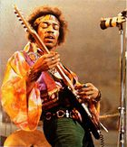

De: La Frikipedia, la enciclopedia extremadamente seria.
Atención: Debido al gran parecido que hay entre El Dios de La Guitarra y La Gran y sensualMarleytuga, muchos confunden a estos seres. Para los hechos de la Marleytuga, ¡Haz click!.
Jimi Hendrix tocando su profecias.  Creando oxigeno en el mundo. Destryendo al regayton. Alcanzando el nirvana. Chateando en Yahoo. Tirandose a tu abuela. Viendo la tele. Dirigiendo cine.
Jimi Hendrix puede revivir a placer, al mismo tiempo que toca la guitarra y se tira a tu prima.
Come hierro mientras se droga, tocando la guitarra y la bateria al mismo tiempo.
Chuck Norris le considera su hermano negro. Ese día se origino la creacion total contra el racismo.
Jimi Hendrix a ganado tres veces seguida a la ruleta rusa con una pistola completamente cargada y ganó.
Creó un universo alternativo que después elimino de la faz del tiempo ya que eran reggaetoneros.
Volvió a crear otro universo paralelo en que el Heavy metal es una religión.
El dia que nació, la enfermera racista dijo "¡Ostia! ¡¡Un murciélago!!" y al instante murió por hereje. Después follo con Hendrix y rápidamente dejo de ser una nazi para ser una Hipi y revivió.
Nunca a sido malo, solo bondad pura a base de porros y éxtasis.
Usa su guitarra no solo para promover la paz mundial, y la legalización de las drogas, sino también para amargar la existencia a Wilson.
Jimi Hendrix es el mejor amigo de el guitarra de Nirvana.
Jimi Hendrix pegó un golpe de estado en Mordor que provoco así la tercera guerra zombi.
A tocado con Slipknot y desde entonces el mundo les considera satánicos.
Cuando la chica de "The Ring" salió de la TV de Jimi Hendrix, este saco un condón, y desde actualmente es otra sodomizada por nuestro india/negro rei guitarrista.
Jimi Hendrix fue el maestro "del fuego" de Till Lindemann.
Dos más dos son 50 si Jimi lo desea.
Nunca se ha cabreado porque le llaman negro.
En un documental, envio a la mierda a un negro rapero gangta.
Cuando son las doce de la noche, Jimi Hendrix se convierte en un pantera blanca
Puede hacerte sentir "en paz" con solo tocarte.
Jimi Hendrix antes de hacerse músico, ya sabia como hacer música (a base de eructos).
Puedes intentarlo las veces que quieras, jamas te sacaras los mismo rigg que él.
Una vez John Kramer le metió en la prueba más difícil jamas hecho, Jimi salio en 0'3 segundo del lugar.
Cada diez segundo, cogía (no, no hablo de sexo) y estampaba guitarras contra los amplis. Lo curioso, es que al salir de los conciertos, todas sus guitarras estaban intactas.
Cada vez que alguien pasa cerca de su tumba, se dice que si dices LSD, sale Hendrix del ataúd.
 De: La Frikipedia, la enciclopedia extremadamente seria.
De: La Frikipedia, la enciclopedia extremadamente seria.